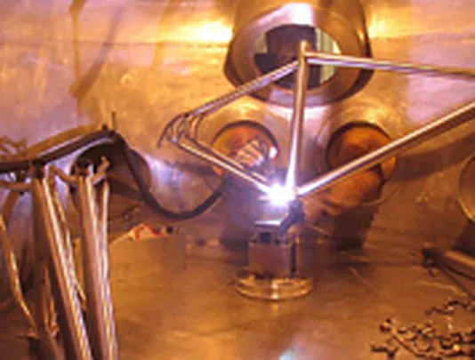
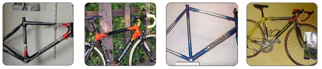
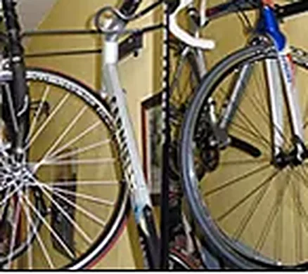
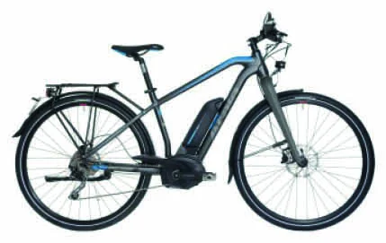
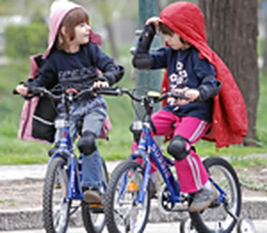
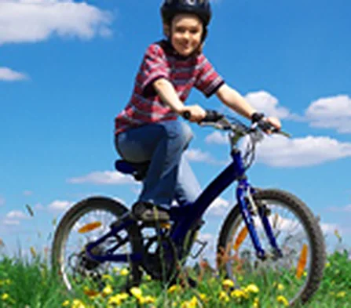
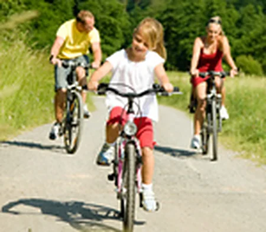
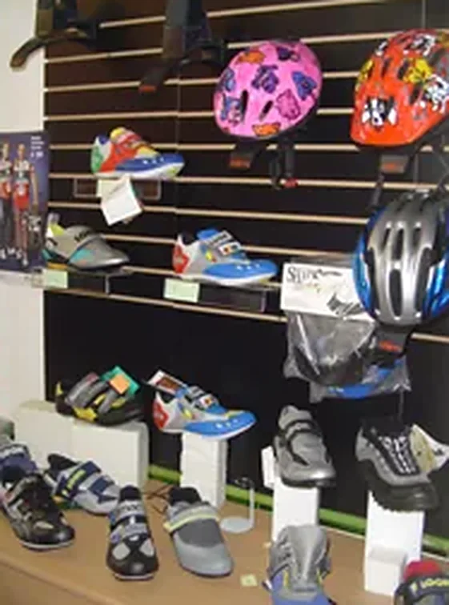
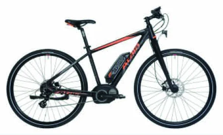
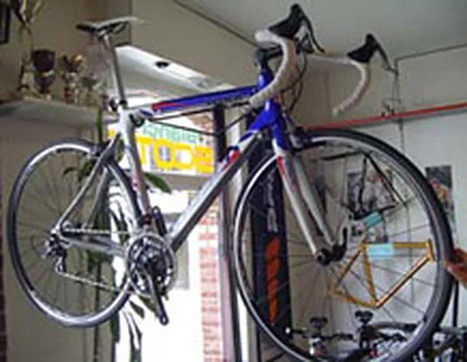

Vente de vélos de tous types, vélos sur mesure, atelier de réparation et étude posturale Bikefitting. Le magasin de Michel, plus de 25 ans d'expérience, au bord de la Meuse à Profondeville.
Interventions garantiesde la crevaison à la panne électrique
Sur mesuresans supplément de prix
Test center agrééselles SMP et ID Match
École de vélo 7 – 14 ansreconnue par la Communauté française
Des vélos pour tous
Le vélo qui vous correspond est ici.
Pour la compétition, les randonnées en forêt, les balades en ville ou les allers-retours à l'école et au boulot : enfants et adultes trouvent chez nous le vélo adapté, et des professionnels pour aider à choisir.
Vélos sur mesure et personnalisés
Un vélo miroir de votre personnalité.
Créé pour vous
Adapté à votre taille
Peint aux couleurs qui vous plaisent
100 % personnalisé
Sans supplément de prix
Votre taille, vos couleurs préférées et votre budget. Les vélos de course sont faits principalement sur mesure, à la demande du client.

Cadre titane

Cadres sur mesure, photos du site du magasin.

Course et VTT
Chaque vélo est unique : poids, taille, matériau… Nos professionnels vous aident à choisir le modèle adapté à votre activité. VTT de balade, de loisirs ou de compétition.
Marques citées sur le site : Lombardo, Bottecchia, Shockblaze

Électriques
Allez partout sans effort, avec une autonomie importante et dans le respect de l'environnement. Le vélo électrique est la solution.
À l'atelier : reset du moteur Bosch, sur rendez-vous
CarboneNouveau · ville et tout chemin
Ville et tout chemin
En milieu urbain ou rural, il y a toujours un vélo qui s'adapte : balades en ville ou escapades en campagne. Nouveau : le cadre carbone, pour allier légèreté et confort.



Enfants
Le premier pas vers la liberté. Pour sa sécurité, le vélo doit être à la bonne taille, assemblé et contrôlé par un vélociste. Nouveau : cadre alu, plus léger et plus confortable.
Gammes citées : Lombardo, Frog Bikes

Accessoires et vêtements
Tous les accessoires indispensables pour pédaler en sécurité, casque en tête. Cuissards, maillots, vestes, gants, chaussures : des balades plus confortables.
Marques citées : AGU, Sidi, Limar, Abus, Axa
Test center agrééSMPID Match
Selles
Votre position sur la selle est très importante. Un système de mesure nous permet de trouver la selle qui vous convient le mieux.
Agréé Test center SMP et ID Match
Atelier et réparation
De la crevaison à la panne électrique, nous réparons et garantissons toutes nos interventions.
De la réparation la plus élémentaire à la plus complexe, de l'entretien courant au problème mécanique. Prenez rendez-vous pour une réparation : un travail soigné et de qualité.

Vélo électrique BoschOffrez un « reset » au moteur Bosch de votre vélo électrique, sur rendez-vous à l'atelier.

Sur le pied d'atelierÀ l'établi
Notre passion
Le vélo
Notre devise
« Chacun son métier »
Notre ambition
Garder la confiance du client
Notre prix
Le plus juste
1 Hauteur de selle 2 Portée jusqu'au cintre · votre position mesurée, votre vélo réglé à vos mesures.
Étude posturale · Bikefitting
Prenez la bonne position sur votre vélo.
Une mauvaise posture peut transformer le vélo en cauchemar. Tous les kinés le disent : votre position doit être en parfaite concordance avec votre morphologie. Le système de mesure Bikefitting confirme l'expérience de plus de 25 ans du patron, Michel. On contrôle votre vélo et on rectifie votre position en selle, pour ne plus subir :
Mal de dos
Mal de jambes
Mal de nuque
Mal de genoux
Test center SMPAgréé pour le test des selles SMP
ID MatchAgréé : selle choisie selon votre anatomie
Réparation, entretien, reset Bosch, test de selle ou étude posturale : choisissez le motif, le jour et l'heure. Le magasin vous rappelle pour confirmer.
Au-delà du magasin
Un club, une école et du sport chez vous.
Cycles & Sport Mosan, ce n'est pas qu'un comptoir : on roule ensemble dans la vallée mosane, on apprend le vélo aux enfants, et on accompagne les plus de 55 ans à domicile.
Club cycliste et école de vélo
Randonnées au départ de Profondeville
Un club cycliste et une école de vélos pour les 7 à 14 ans, reconnue par la Communauté française. D'agréables randonnées à travers la vallée mosane, un territoire au patrimoine naturel remarquable.
Pas la possibilité d'aller en salle de sport ? Un coach se déplace chez vous pour travailler à votre rythme et selon vos capacités : équilibre, tonus, vitalité et joie de vivre.